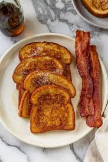

- Preheat oven to 375°.
- Mist a 9x13 in backing dish with cooking spray and set.
- In a medium saucepan over medium heat, meltthe butter. When
the butter is melted, sprinkle the flour over the butter while
whisking. Whisk until it's well combined, about 1 minute.
- Reduce heat to low and add milk, 1 cup at a time, whisking
slowly and continuously, for 1 to 2 minutes. Remove from heat.
- Add 1 1/2 of cheeseto the sauce and stir until melted
and smooth.
- Pour cheese sauce into the bottom of the prepared baking dish.
Add the cooked chicken rice, chicken and frozen vegetables.
Stir until well combined. Cover tightly with aluminum foil and
bake for 20 minutes.
- Remove foil. Stir, then sprinkle remaining 1 cup of cheese over
the top. Return the dish to the oven and bake for another 5
minutes.
- Remove from the oven and let stand for 5 minutes before serving
Classic French french Toast

"Just a nice basic french toast recipe. Nothing fancy.
This actually works better with stale bread, go figure."
Prep :10 mins * Cook:15 mins * Total: 25
Servings: 3
Ingredients:
- 2 eggs
- 1/4 cup milk
- 1/4 teaspoon vanilla extract
- 1/2 teaspoon cinnamon sugar
- 6 slices stale bread
Instructions:
- Beat eggs in a shallow bowl. Add milk, vanilla and cinnamon
sugar, and beat uuntil frothy.
- Soak each slice of bread in the egg mixture, first on one side,
then the other.
- Cook both sides in a greased non - stick skillet until golden.